Measuring gene expression on a genome-wide scale has become common practice over the last two decades or so, with microarrays predominantly used pre-2008. With the advent of next generation sequencing technology in 2008, an increasing number of scientists use this technology to measure and understand changes in gene expression in often complex systems. As sequencing costs have decreased, using RNA-Seq to simultaneously measure the expression of tens of thousands of genes for multiple samples has never been easier. The cost of these experiments has now moved from generating the data to storing and analysing it.
There are many steps involved in analysing an RNA-Seq experiment. Analysing an RNA-seq experiment begins with sequencing reads. These are aligned to a reference genome, then the number of reads mapped to each gene can be counted. This results in a table of counts, which is what we perform statistical analyses on to determine differentially expressed genes and pathways. The purpose of this tutorial is to demonstrate how to perform differential expression on count data with limma-voom. How to generate counts from reads (FASTQs) is covered in the accompanying tutorial RNA-seq reads to counts.
This study examined the expression profiles of basal stem-cell enriched cells (B) and committed luminal cells (L) in the mammary gland of virgin, pregnant and lactating mice. Six groups are present, with one for each combination of cell type and mouse status. Note that two biological replicates are used here, two independent sorts of cells from the mammary glands of virgin, pregnant or lactating mice, however three replicates is usually recommended as a minimum requirement for RNA-seq. In this tutorial we will use the GEO counts file as a starting point for our analysis. Alternatively, you could create a count matrix from the raw sequence reads, as demonstrated in the RNA-seq reads to counts tutorial. The GEO count file was generated from aligning the reads to the mouse mm10 genome with the Rsubread aligner, followed by counting reads mapped to RefSeq genes with featureCounts (Liao, Smyth, and Shi 2014), see the Fu paper for details.
We will use limma-voom for identifying differentially expressed genes here. Other popular alternatives are edgeR and DESeq2. Limma-voom has been shown to be perform well in terms of precision, accuracy and sensitivity Costa-Silva, Domingues and Lopes 2017 and, due to its speed, it’s particularly recommended for large-scale datasets with 100s of samples Chen, Lun, Smyth 2016.
This is a Galaxy tutorial based on material from the COMBINE R RNAseq workshop, first taught here. Some of the gene set testing material is inspired by the Cancer Research UK workshop here
Rename the counts dataset as seqdata and the sample information dataset as sampleinfo using the galaxy-pencil (pencil) icon.
Check that the datatype is tabular.
If the datatype is not tabular, please change the file type to tabular.
tip Tip: Changing the datatype
Click on the galaxy-pencil (pencil) icon displayed in your dataset in the history
Choose Datatype on the top
Select tabular
Press Save
Let’s take a look at the data. The seqdata file contains information about genes (one gene per row), the first column has the Entrez gene id, the second has the gene length and the remaining columns contain information about the number of reads aligning to the gene in each experimental sample. There are two replicates for each cell type and time point (detailed sample info can be found in file “GSE60450_series_matrix.txt” from the GEO website). The first few rows and columns of the seqdata file are shown below.
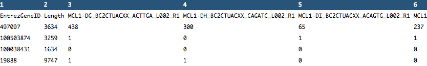Figure 2: Count file (before formatting)
The sampleinfo file contains basic information about the samples that we will need for the analysis. See below.
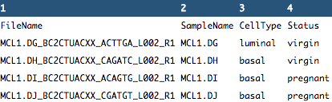Figure 3: Sample information file (before formatting)
Format the data
Let’s create a new file, countdata, that contains only the counts for the 12 samples i.e. we’ll remove the gene length column with the Cut columns from a table (cut) tool. The sample names are also pretty long so we’ll use the Replace Text in entire line tool to shorten these to contain only the relevant information about each sample.
hands_on Hands-on: Format the counts data
Cuttool: Run Cut columns from a table (cut) with the following settings:
“File to cut”: seqdata
“Operation”: Discard
“List of fields”: Select Column:2
Replace Texttool: Run Replace Text in entire line with the following settings:
“File to process”: output of Cuttool
“Find pattern”: _B[A-Z0-9_]+
Rename file as countdata using the galaxy-pencil (pencil) icon. The file should look like below.
Figure 4: Count file (after formatting)
Next, let’s create a new file, factordata, that contains the groups information that we need for the limma-voom tool. We’ll combine the cell type and mouse status to make 6 groups e.g. we’ll combine the CellType basal with the Status pregnant for the group basalpregnant. We’ll use the Merge Columns tool to combine the cell type and mouse status columns in the sample information file, making a column with the 6 group names.
hands_on Hands-on: Format the sample information file
Merge Columnstool: Run Merge Columns together with the following settings:
“Select data”: sampleinfo
“Merge column”: Column: 3
“with column”: Column: 4
Cuttool: Run Cut columns from a table (cut) with the following settings:
“File to cut”: output of Merge Columnstool
“Operation”: Keep
“List of fields”: Select Column:2 and Column:5
Rename file as factordata using the galaxy-pencil (pencil) icon. The file should look like below.
Figure 5: Sample information file (after formatting)
Get gene annotations
Optionally, gene annotations can be provided to the limma-voom tool and if provided the annotation will be available in the output files. We’ll get gene symbols and descriptions for these genes using the Galaxy annotateMyIDs tool, which provides annotations for human, mouse, fruitfly and zebrafish.
hands_on Hands-on: Get gene annotations
annotateMyIDstool: Run annotateMyIDs with the following settings:
“File with IDs”: countdata
“File has header”: Yes
“Organism”: Mouse
“ID Type”: Entrez
“*Output columns”: tick
ENTREZID
SYMBOL
GENENAME
Rename file as annodata using the galaxy-pencil (pencil) icon. The file should look like below.
Figure 6: Gene annotation file
Differential expression with limma-voom
Filtering to remove lowly expressed genes
It is recommended to filter for lowly expressed genes when running the limma-voom tool. Genes with very low counts across all samples provide little evidence for differential expression and they interfere with some of the statistical approximations that are used later in the pipeline. They also add to the multiple testing burden when estimating false discovery rates, reducing power to detect differentially expressed genes. These genes should be filtered out prior to further analysis.
There are a few ways to filter out lowly expressed genes. When there are biological replicates in each group, in this case we have a sample size of 2 in each group, we favour filtering on a minimum counts per million threshold present in at least 2 samples. Two represents the smallest sample size for each group in our experiment. In this dataset, we choose to retain genes if they are expressed at a counts-per-million (CPM) above 0.5 in at least two samples. The CPM threshold selected can be compared to the raw count with the CpmPlots (see below).
details More details on filtering
The limma tool uses the cpm function from the edgeR package Robinson, McCarthy, and Smyth 2010 to generate the CPM values which can then be filtered. Note that by converting to CPMs we are normalizing for the different sequencing depths for each sample. A CPM of 0.5 is used as it corresponds to a count of 10-15 for the library sizes in this data set. If the count is any smaller, it is considered to be very low, indicating that the associated gene is not expressed in that sample. A requirement for expression in two or more libraries is used as each group contains two replicates. This ensures that a gene will be retained if it is only expressed in one group. Smaller CPM thresholds are usually appropriate for larger libraries. As a general rule, a good threshold can be chosen by identifying the CPM that corresponds to a count of 10, which in this case is about 0.5. You should filter with CPMs rather than filtering on the counts directly, as the latter does not account for differences in library sizes between samples.
Normalization for composition bias
In RNA-seq the counts are normalized for different sequencing depths between samples. Normalizing to eliminate composition biases between samples is also typically performed. Composition biases can occur, for example, if there are a few highly expressed genes dominating in some samples, leading to less reads from other genes. By default, TMM normalization (Robinson and Oshlack 2010) is performed by the limma tool using the edgeR calcNormFactors function (this can be changed under Advanced Options). TMM stands for Trimmed Mean of M values, where a weighted trimmed mean of the log expression ratios is used to scale the counts for the samples. See the figure from the TMM paper below. Note the plot (Figure 1c) that shows how a few highly expressed genes in the liver sample (where the arrow is) results in the majority of other genes in the sample having the appearance of being expressed lower in liver. The mid-line through the points is offset from the expected zero and the TMM normalization factor (red line) scales the counts to adjust for this.
Figure 7: TMM normalization (Robinson and Oshlack 2010)
Specify Contrast(s) of interest
Since we are interested in differences between groups, we need to specify which comparisons we want to test. For example, if we are interested in knowing which genes are differentially expressed between the pregnant and lactating group in the basal cells we specify basalpregnant-basallactate for the Contrast of Interest. Note that the group names in the contrast must exactly match the names of the groups in the factordata file. More than one contrast can be specified using the Insert Contrast button, so we could look at more comparisons of the groups here, but first we’ll take a look at basalpregnant-basallactate.
hands_on Hands-on: Differential expression with limma-voom
limmatool: Run limma with the following settings:
“Differential Expression Method”: limma-voom
“Count Files or Matrix?”: Single Count Matrix
“Count Matrix”: Select countdata
“Input factor information from file?”: Yes
“Factor File”: Select factordata
“Use Gene Annotations?”: Yes
“Factor File”: Select annodata
“Contrast of Interest”: basalpregnant-basallactate
“Filter lowly expressed genes?”: Yes
“Filter on CPM or Count values?”: CPM
“Minimum CPM”: 0.5
“Minimum Samples”: 2
Inspect the Report produced by clicking on the galaxy-eye (eye) icon
Quality Control of count data
Before we check out the differentially expressed genes, we can look at the Report information to check that the data is good quality and that the samples are as we would expect.
Multidimensional scaling plot
By far, one of the most important plots we make when we analyse RNA-Seq data are MDS plots. An MDS plot is a visualisation of a principal components analysis, which determines the greatest sources of variation in the data. A principal components analysis is an example of an unsupervised analysis, where we don’t need to specify the groups. If your experiment is well controlled and has worked well, what we hope to see is that the greatest sources of variation in the data are the treatments/groups we are interested in. It is also an incredibly useful tool for quality control and checking for outliers. This Galaxy limma tool outputs an MDS plot by default in the Report and a link is also provided to a PDF version (MDSPlot_CellTypeStatus.pdf). a scree plot is also produced that shows how much variation is attributed to each dimension. If there was a batch effect for example, you may see high values for additional dimensions. The limma tool plots the first two dimensions by default (1 vs 2), however you can also plot additional dimensions 2 vs 3 and 3 vs 4 using under Output Options Additional Plots MDS Extra These are displayed in the Report along with a link to a PDF version (MDSPlot_extra.pdf).
Figure 8: MDS Plot
Take a look at the MDS plot coloured by group.
question Question
Do you notice anything about the samples in this plot?
solution Solution
Two samples don’t appear to be in the right place.
It turns out that there has been a mix-up with two samples, they have been mislabelled in the sample information file. This shows how the MDS plot can also be useful to help identify if sample mix-ups may have occurred. We need to redo the limma-voom analysis with the correct sample information.
hands_on Hands-on: Use the Rerun button to redo steps
Import the correct sample information file from https://ndownloader.figshare.com/files/5999832?private_link=1d788fd384d33e913a2a
Use the Rerun button in the History to redo the Merge Columns and Cut steps on the correct sample information file.
Delete the incorrect sample information datasets to avoid any confusion.
Rerun limma as before with the correct sampleinfo file and adding the following settings:
Output Options
“Additional Plots” tick:
Density Plots (if filtering)
CpmsVsCounts Plots (if filtering on cpms)
Box Plots (if normalising)
MDS Extra (Dims 2vs3 and 3vs4)
MD Plots for individual samples
Heatmaps (top DE genes)
Stripcharts (top DE genes)
“Output Library information file?”: Yes
In the Report you should then see the correct MDS plot as below.
Figure 9: MDS Plot (correct samples)
details More details on MDS plots
The distance between each pair of samples in the MDS plot is calculated as the leading fold change, defined as the root-mean-square of the largest 500 log2-fold changes between that pair of samples. Replicate samples from the same group cluster together in the plot, while samples from different groups form separate clusters. This indicates that the differences between groups are larger than those within groups, i.e., differential expression is greater than the variance and can be detected. In the MDS plot, the distance between basal samples on the left and luminal cells on the right is about 6 units, corresponding to a leading fold change of about 64-fold (2^6 = 64) between basal and luminal. The expression differences between virgin, pregnant and lactating are greater for luminal cells than for basal.
Clustering in the MDS plot can be used to motivate changes to the analysis in light of potential batch effects. For example, imagine that the first replicate of each group was prepared at a separate time from the second replicate. If the MDS plot showed separation of samples by time, it might be worthwhile including time in the downstream analysis to account for the time-based effect.
question Question
What is the greatest source of variation in the data (i.e. what does dimension 1 represent)?
What is the second greatest source of variation in the data?
solution Solution
Dimension 1 represents the variation due to cell type, basal vs luminal. Dimension 2 represents the variation due to the stages, virgin, pregnant or lactating.
Next, scroll down the Report to take a look at the Additional information and Summary of experimental data sections near the bottom. It should look similar to below. Here you can check that the correct samples have been assigned to the correct groups, what settings were used (e.g. filters, normalization method) and also how many genes were filtered out due to low expression.
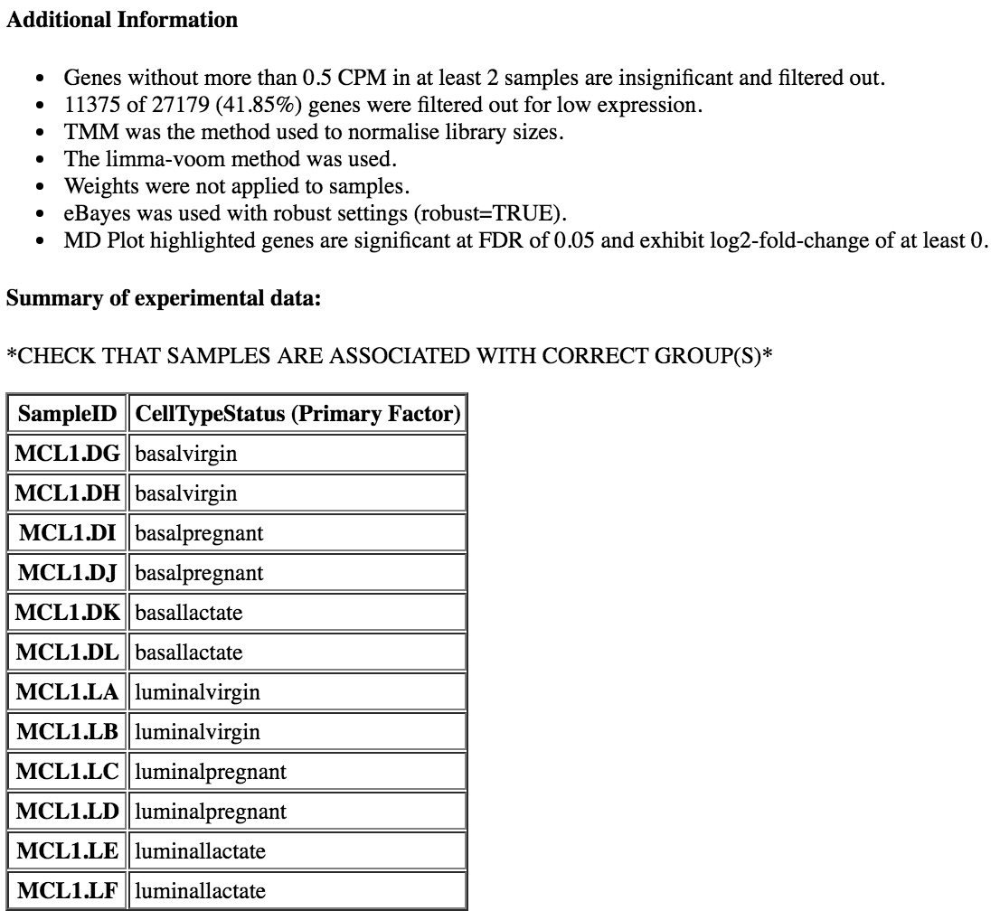
question Question
How many genes have been filtered out for low expression?
solution Solution
11375 genes were filtered out as insignificant as they were without more than 0.5 CPM in at least 2 samples.
tip Tip
A threshold of 1 CPM in at least minimum group sample size is a good rule of thumb for samples with about 10 million reads. For larger library sizes increase the CPM theshold and for smaller library sizes decrease it. Check the CpmsVsCounts plots to see if the selected threshold looks appropriate for the samples (equivalent to ~10 reads).
Density plots
Density plots can be output in the Report if Filter lowly expressed genes is applied. A link is also provided in the Report to a PDF version (DensityPlots.pdf). These plots allow comparison of the counts distributions before and after filtering. The samples are coloured by the groups. Count data is not normally distributed, so if we want to examine the distributions of the raw counts we need to log the counts. We typically check the distribution of the read counts on the log2 scale. A CPM value of 1 is equivalent to a log-CPM value of 0 and the CPM we used of 0.5 is equivalent to a log-CPM of -1. It can be seen in the before filtering plot below that a large proportion of genes within each sample are not expressed or lowly-expressed and our filter of CPM of 0.5 (in at least 2 samples) removes a lot of these uninformative genes.
Figure 10: Density Plots
We can also have a look more closely to see whether our threshold of 0.5 CPM does indeed correspond to a count of about 10-15 reads in each sample with the plots of CPM versus raw counts.
The Report provides links to PDFs of all plots shown in the Report and also to the rest of the additional plots selected to be output.
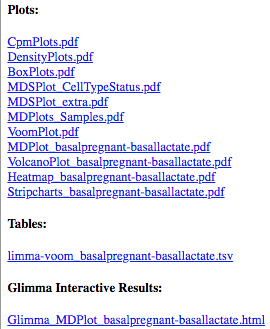Figure 11: Report outputs
Click on the CpmPlots.pdf link in the Report. You should see 12 plots, one for each sample. Two of the plots are shown below. From these plots we can see that 0.5 CPM is equivalent to ~10 counts in each of the 12 samples, so 0.5 seems to be an appropriate threshold for this dataset (these samples all have sequencing depth of 20-30 million (see the Library information file below) so a CPM value of 0.5 would be ~10 counts).
Figure 12: CPM vs Raw Counts Plots
tip Tip
A threshold of 1 CPM in at least minimum group sample size is a good rule of thumb for samples with about 10 million reads. For larger library sizes increase the CPM theshold and for smaller library sizes decrease it. Check the CpmPlots to see if the selected threshold looks appropriate for the samples (equivalent to ~10 reads).
Box plots
We can also use box plots to check the distributions of counts in the samples. Box plots can be selected to be output by the Galaxy limma-voom tool if normalization is applied (TMM is applied by default). The plots are output in the Report and a link is also provided to a PDF version (BoxPlots.pdf). With the box plots for these samples we can see that overall the distributions are not identical but still not very different. If a sample is really far above or below the blue horizontal line we may need to investigate that sample further.
Figure 13: Box Plots
question Question
Compare the box plots before and after TMM normalisation. Can you see any differences?
solution Solution
After the normalization more of the samples are closer to the median horizontal line.
The TMM normalization generates normalization factors, where the product of these factors and the library sizes defines the effective library size. TMM normalization (and most scaling normalization methods) scale relative to one sample. The normalization factors multiply to unity across all libraries. A normalization factor below one indicates that the library size will be scaled down, as there is more suppression (i.e., composition bias) in that library relative to the other libraries. This is also equivalent to scaling the counts upwards in that sample. Conversely, a factor above one scales up the library size and is equivalent to downscaling the counts. We can see the normalization factors for these samples in the Library information file that we selected to output. Click on the galaxy-eye (eye) icon to view.
Figure 14: Library information file
question Question
Which sample has the largest normalization factor? Which sample has the smallest?
solution Solution
MCL1.LA has the largest normalization factor and MCL1.LE the smallest.
MD plots for samples
It is considered good practice to make mean-difference (MD) plots for all the samples as a quality check, as described in this edgeR workflow article. These plots allow expression profiles of individual samples to be explored more closely. An MD plot shows the log-fold change between a sample against the average expression across all the other samples. This visualisation can help you see if there are genes highly upregulated or downregulated in a sample. If we look at mean difference plots for these samples, we should be able to see the composition bias problem. The mean-difference plots show average expression (mean: x-axis) against log-fold-changes (difference: y-axis).
Click on the MDPlots_Samples.pdf link in the Report. You should see 12 MD plots, one for each sample. Let’s take a look at the plots for the two samples MCL1.LA and MCL1.LE that had the largest and smallest normalization factors. The MD plots on the left below show the counts normalized for library size and the plots on the right show the counts after the TMM normalization has been applied. MCL1.LA had the largest normalization factor and was above the median line in the unnormalized by TMM box plots. MCL1.LE had the smallest normalization factor and was below the median line in the box plots. These MD plots help show the composition bias problem has been addressed.
Figure 15: MD Plots for MCL1.LA before and after TMM normalizationFigure 16: MD Plots for MCL1.LE before and after TMM normalization
Voom variance plot
This plot is generated by the voom method and displayed in the Report along with a link to a PDF version (VoomPlot.pdf). It shows the mean-variance relationship of the genes in the dataset. It can help show if low counts have been filtered adequately and if there is a lot of variation in our data.
Figure 17: Voom Plot
details More details on Voom variance plots
If we didn’t filter this dataset for the lowly expressed genes the variance plot would look like below.
Figure 18: Voom Plot unfiltered counts
If we look at the plot generated with the two samples mixed up we can see there’s more variation.
Figure 19: Voom Plot mixed-up samples
More examples of the variation this plot can show can be seen in Figure 1 from the limma-voom paper, shown below.
Figure 20: Voom Plot more examples
Figure 1: Mean-variance relationships. Gene-wise means and variances of RNA-seq data are represented by black points with a LOWESS trend. Plots are ordered by increasing levels of biological variation in datasets. (a) voom trend for HBRR and UHRR genes for Samples A, B, C and D of the SEQC project; technical variation only. (b) C57BL/6J and DBA mouse experiment; low-level biological variation. (c) Simulation study in the presence of 100 upregulating genes and 100 downregulating genes; moderate-level biological variation. (d) Nigerian lymphoblastoid cell lines; high-level biological variation. (e) Drosophila melanogaster embryonic developmental stages; very high biological variation due to systematic differences between samples. (f) LOWESS voom trends for datasets (a)–(e). HBRR, Ambion’s Human Brain Reference RNA; LOWESS, locally weighted regression; UHRR, Stratagene’s Universal Human Reference RNA.
MD and Volcano plots for DE results
Genome-wide plots that are useful for checking differentially expressed (DE) results are MD plots (or MA plots) and Volcano plots. There are functions in limma for generating these plots and they are used by this tool. These plots are output by default and shown in the Report along with a link to PDF versions (MDPlot_basalpregnant-basallactate.pdf and VolcanoPlot_basalpregnant-basallactate.pdf). In the volcano plot the top genes (by adjusted p-value) are highlighted. The number of top genes is 10 by default and the user can specify the number of top genes to view (up to 100) under Advanced Options.
Figure 21: MD Plot and Volcano Plot
The MD Plot highlighted genes are significant at an adjusted p-value (adj.P) threshold of 0.05 and exhibit log2-fold-change (lfc) of at least 0. These thresholds can be changed under Advanced Options.
question Question
How many genes are differentially expressed at the default thresholds of adj.P=0.05 and lfc=0?
solution Solution
The number of DE genes at these adj.P and lfc thresholds is shown in the table in the Report as below.
comment Comment on adjusted P value
A note about deciding how many genes are significant: In order to decide which genes are differentially expressed, we usually take a cut-off (e.g. 0.05 or 0.01) on the adjusted p-value, NOT the raw p-value. This is because we are testing many genes (more than 15000 genes here), and the chances of finding differentially expressed genes is very high when you do that many tests. Hence we need to control the false discovery rate, which is the adjusted p-value column in the results table. What this means is that, if we choose an adjusted p-value cut-off of 0.05, and if 100 genes are significant at a 5% false discovery rate, we are willing to accept that 5 will be false positives.
Testing relative to a threshold (TREAT)
When there is a lot of differential expression, sometimes we may want to cut-off on a fold change threshold as well as a p-value threshold so that we follow up on the most biologically significant genes. However, it is not recommended to simply rank by p-value and then discard genes with small logFC’s, as this has been shown to increase the false discovery rate. In other words, you are not controlling the false discovery rate at 5% any more. There is a function called treat in limma that performs this style of analysis correctly (McCarthy and Smyth 2009). TREAT will simply take a user-specified log fold change cut-off and recalculate the moderated t-statistics and p-values with the new information about logFC. There are thousands of genes differentially expressed in this basalpregnant-basallactate comparison, so let’s rerun the analysis applying TREAT and similar thresholds to what was used in the Fu paper: an adjusted P value of 0.01 (1% false discovery rate) and a log-fold-change cutoff of 0.58 (equivalent to a fold change of 1.5).
hands_on Hands-on: Testing relative to a threshold (TREAT)
limmatool: Rerun limma with the following settings:
“Output Options”
“Output Library information file?”: No
“Advanced Options”
“Minimum Log2 Fold Change”: 0.58
“P-Value Adjusted Threshold”: 0.01
“Test significance relative to a fold-change threshold (TREAT)”: Yes
Inspect the Report
We can see that much fewer genes are now highlighted in the MD plot and identified as differentially expressed.
Before following up on the DE genes with further lab work, it is recommended to have a look at the expression levels of the individual samples for the genes of interest. The Galaxy limma tool can auto-generate heatmaps of the top genes to show the expression levels across the samples. It can also generate stripcharts to view the expression of the top genes across the groups. This enables a quick view of the expression of the top differentially expressed genes. These types of plots can also help show if expression is consistent between replicates in the groups.
Heatmap of top genes
Click on the Heatmap_basalpregnant-basallactate.pdf link in the Report. You should see a plot like below.
Figure 24: Heatmap of top genes
Stripcharts of top genes
Click on the Stripcharts_basalpregnant-basallactate.pdf link in the Report. You should see 10 plots, one for each top gene. Four are shown below.
Figure 25: Stripcharts of top genes
Interactive plots (Glimma)
An interactive version of the mean-difference plots is output via the Glimma package if a gene annotation file is provided to the Galaxy limma tool. A link to a html page is generated in the Report that allows the user to search for their favourite gene.
Click on the Glimma_MDPlot_basalpregnant-basallactate.html link in the Report. You should see a two-panel interactive MD plot like below. The left plot shows the log-fold-change vs average expression. The right plot shows the expression levels of a particular gene of each sample by groups (similar to the stripcharts). Hovering over points on left plot will plot expression level for corresponding gene, clicking on points will fix the expression plot to gene. Clicking on rows on the table has the same effect as clicking on the corresponding gene in the plot.
hands_on Hands-on: Search for a gene of interest
Egf was a gene identifed as very highly expressed in the Fu paper and confirmed with qRT-PCR, see Fig. 6c from the paper below.
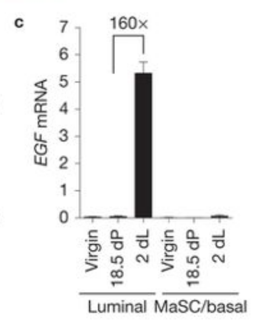Figure 26: Fu et al, Nat Cell Biol 2015
Search for Egf in the Glimma interactive table. You should see something similar to below.
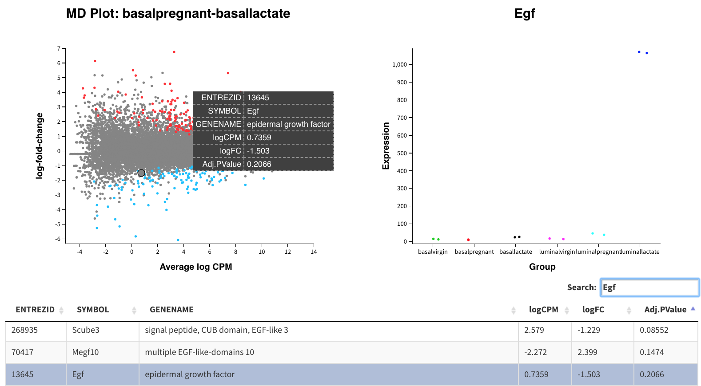Figure 27: Glimma EGF gene
Egf is not identified as differentially expressed in the basal cells (see the Adj.PValue) but in the plot showing the Expression levels of all samples, notice that we can see it is highly expressed in the luminallactate group.
Multiple contrasts can be run with the limma tool. For example, we can compare the pregnant and lactating conditions for both the basal and luminal cells. So let’s rerun the limma-voom TREAT analysis (adj.P <0.01 and lfc=0.58) and this time use the Insert Contrast button to include the additional contrast luminalpregnant - luminallactate. We can then see how the number of differentially expressed genes in the luminal cells compares to the basal cells.
hands_on Hands-on: Run multiple contrasts
limmatool: Rerun limma adding the following settings (i.e. run with 2 contrasts):
“Contrast of Interest”: basalpregnant-basallactate
“Contrast of Interest”: luminalpregnant-luminallactate
“Advanced Options”
“Minimum Log2 Fold Change”: 0.58
“P-Value Adjusted Threshold”: 0.01
“Test significance relative to a fold-change threshold (TREAT)”: Yes
Inspect the Report
You should find that there are more genes differentially expressed for the luminal cells than the basal. There are ~274 genes DE in basal cells versus ~ 1610 in the luminal cells.
Figure 28: Basal vs Luminal DE counts
This is similar to what Fu et al found, many more genes differentially expressed in the luminal cells on lactation, compared to the basal cells.
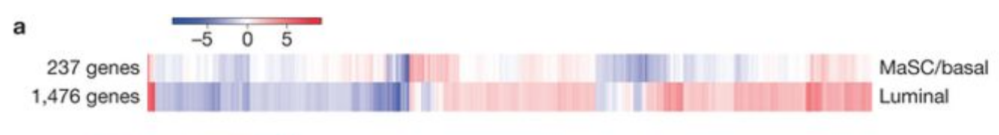Figure 29: Fu et al, Nat Cell Biol 2015
Note that the tables of differentially expressed genes are output as links in the Report (limma-voom_basalpregnant-basallactate.tsv and limma-voom_luminalpregnant-luminallactate.tsv), see below, and also in the history (DE tables). With multiple contrasts, a plot for each contrast is generated for relevant plots, as shown below.
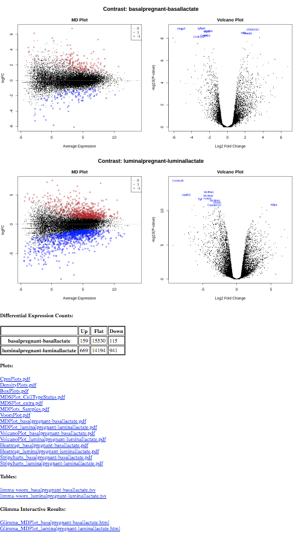Figure 30: Multiple contrasts output
tip Tip
The Report with all the plots and tables can be downloaded by clicking on the floppy disk icon on the dataset in the history as shown below.
Figure 31: Download limma report
Create heatmap of custom genes
You may want to create a heatmap for a set of genes of interest, such as the 31 genes from the original paper using this dataset, Fig. 6b below. These 31 genes include the authors’ main gene of interest in the paper, Mcl1, and a set of cytokines/growth factors, identified as differentially expressed in the luminal pregnant vs lactating cells by the authors. We will recreate the heatmap to show the steps. It also serves as a sanity check, to check that our results look similar to what was shown in the paper. For this we need the normalized counts which we can get from the limma tool.
Paste the information above (the 31 gene symbols and header) into the Galaxy Data Uploader Paste/Fetch box
Set File Type to tabular
Use the galaxy-pencil (pencil) icon to rename the file to heatmap genes
Join two Datasetstool with the following parameters:
param-file“Join”: the heatmap genes file
“using column”: Column: 1
param-file“with”: Normalised counts file (output of limmatool)
“and column”: Column: 2
“Keep lines of first input that do not join with second input”: No
“Keep the header lines”: Yes
The generated file has more columns than we need for the heatmap. In addition to the columns with normalized counts (in log2), there is the and other information. We need to remove the extra columns.
Cut columns from a tabletool to extract the columns with the gene ids and normalized counts
“Cut columns”: c1,c5-c16
“Delimited by”: Tab
param-file“From”: the joined dataset (output of Join two Datasetstool)
The genes are in rows and the samples in columns, we could leave the genes in rows but we will transpose to have genes in columns and samples in rows as in the Figure in the paper.
Transposetool to have samples in rows and genes in columns
“Input tabular dataset”:
param-file“From”: the Cut dataset (output of Cuttool)
We now have a table with the 31 genes in columns and the 12 samples in rows.
hands_on Hands-on: Plot the heatmap of custom genes
heatmap2tool to plot the heatmap
param-file“Input should have column headers”: the generated table (output of Transposetool)
“Data transformation”: Plot the data as it is
“Enable data clustering”: No
“Labeling columns and rows”: Label my columns and rows
“Coloring groups”: Blue to white to red
“Data scaling”: Scale my data by column (scale genes)
You should see a heatmap like below.
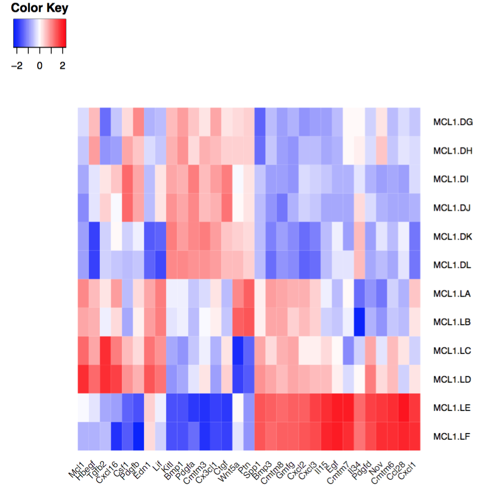Figure 33: Fu heatmap regenerated
question Question
How does the heatmap compare to the one from the Fu paper Fig 6 (above)?
solution Solution
The heatmap looks similar to the heatmap in the paper, which is reassuring.
Gene Set Testing
We have identified genes that are differentially expressed. However, sometimes there is quite a long list of differentially expressed genes to interpret after a differential expression analysis, and it is usually infeasible to go through the list one gene at a time trying to understand it’s biological function. A common downstream procedure is gene set testing, which aims to understand which pathways/gene networks the differentially expressed genes are implicated in. There are many different gene set testing methods that can be applied and it can be useful to try several.
Gene Ontology testing with goseq
We would like to know if there are biological categories that are enriched among the differentially expressed genes. To do this we will perform a Gene Ontology analysis, similar to the RNA-seq ref-based tutorial.
Gene Ontology (GO) analysis is widely used to reduce complexity and highlight biological processes in genome-wide expression studies. However, standard methods give biased results on RNA-seq data due to over-detection of differential expression for long and highly-expressed transcripts.
goseq tool provides methods for performing GO analysis of RNA-seq data, taking length bias into account. The methods and software used by goseq are equally applicable to other category based tests of RNA-seq data, such as KEGG pathway analysis.
goseq needs 2 files as inputs:
a differentially expressed genes file. Information for all genes tested for differential expression (all genes after filtering lowly expressed). This file should have 2 columns:
the Gene IDs (unique within the file)
True (differentially expressed) or False (not differentially expressed)
a gene lengths file. Information to correct for potential length bias in differentially expressed genes. This file should have 2 columns:
the Gene IDs (unique within the file)
the gene lengths
We will use the tables of differentially expressed results output from the limma-voom tool, for both the basal and luminal constrasts, and call genes differentially expressed if they have an adjusted P value below 0.01 and a fold change of 1.5 (equivalent to a of 0.58), as in the Fu paper. We can use the gene lengths from the original table we imported from GEO (seqdata). But if we didn’t have that we could use a tool like featureCountstool to output a gene lengths file. The original file with gene lengths contains all >20k genes, but we only want the ~15k we have in our differentially expressed genes file after filtering low counts, and in the same order. So we will join the lengths file with the differentially expressed genes file, keeping only the lengths information for genes present in the differentially expressed genes file. We can then cut out the columns we need for the two inputs (gene id, length) (gene id, DE status) and as a bonus they will both be sorted in the same order, what we need for goseq.
To generate the two input files we will use:
Compute to add a column to the limma-voom table that gives genes meeting our adj.P and lfc thresholds the value “True” and all other genes the value “False”. We want genes that have a lfc < -0.58 (downregulated) and lfc > 0.58 (upregulated). We could use separate filters (e.g. bool(c4<-0.58) or bool(c4>0.58)) or more simply, we can use the absolute (abs) value 0.58, where the minus sign is ignored.
Join two Datasets to add the gene lengths information to the differentially expressed genes, matching on gene ids
Cut to extract the two columns for the differentially expressed genes information
Cut to extract the two columns for the gene lengths information
hands_on Hands-on: Prepare the two inputs for GOSeq
Computetool with
“Add expression”: bool(c8<0.01) and bool(abs(c4)>0.58) (adj.P < 0.01 and lfc of 0.58)
param-collection“as a new column to”: the DE tables output of limmatool (containing both the basal and luminal contrasts)
Join two Datasetstool with
“Join”: output of Computetool
“using column”: Column: 1
param-file“with” the original GEO counts file seqdata
“and column”: Column: 1
“Keep lines of first input that do not join with second input”: No
“Keep lines of first input that are incomplete”: No
“Fill empty columns”: No
“Keep the header lines”: No
Cut columns from a tabletool with
“Cut columns”: c1,c9 (the gene ids and DE status)
“Delimited by”: Tab
param-file“From”: the output of Jointool
Rename to goseq DE status
Cut columns from a tabletool with
“Cut columns”: c1,c11 (the gene ids and lengths)
“Delimited by”: Tab
param-file“From”: the output of Jointool
Rename to goseq gene lengths
We now have the two required input files for goseq for both our basal and luminal contrasts.
hands_on Hands-on: Perform GO analysis
goseqtool with
param-collection“Differentially expressed genes file”: goseq DE status
param-file“Gene lengths file”: goseq gene lengths
“Gene categories”: Get categories
“Select a genome to use”: Mouse(mm10)
“Select Gene ID format”: Entrez Gene ID
“Select one or more categories”: GO: Biological Process
“Output Options”
“Output Top GO terms plot?”Yes
goseq generates a big table with the following columns for each GO term:
category: GO category
over_rep_pval: p-value for over representation of the term in the differentially expressed genes
under_rep_pval: p-value for under representation of the term in the differentially expressed genes
numDEInCat: number of differentially expressed genes in this category
numInCat: number of genes in this category
term: detail of the term
ontology: MF (Molecular Function - molecular activities of gene products), CC (Cellular Component - where gene products are active), BP (Biological Process - pathways and larger processes made up of the activities of multiple gene products)
p.adjust.over_represented: p-value for over representation of the term in the differentially expressed genes, adjusted for multiple testing with the Benjamini-Hochberg procedure
p.adjust.under_represented: p-value for over representation of the term in the differentially expressed genes, adjusted for multiple testing with the Benjamini-Hochberg procedure
To identify categories significantly enriched/unenriched below some p-value cutoff, it is necessary to use the adjusted p-value.
A plot of the top 10 over-represented GO terms (by adjusted p-value) can be output from the goseq tool to help visualise results. Note that the top 10 are selected by adjusted p-value so if there are multiple terms with the same value there will be more than 10 terms in the plot. Click on the Top over-represented GO terms plot in the history. There should be 2 PDFs, one for each contrast, that look similar to below.
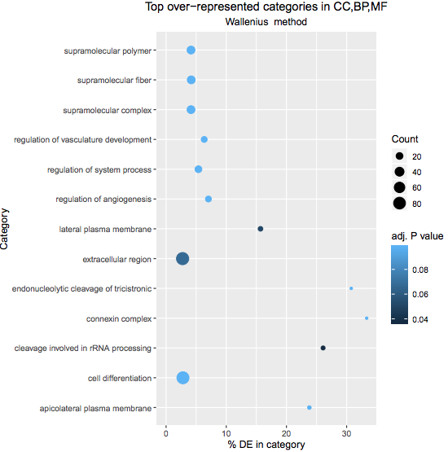Figure 34: Basal pregnant vs lactating top 10 GO terms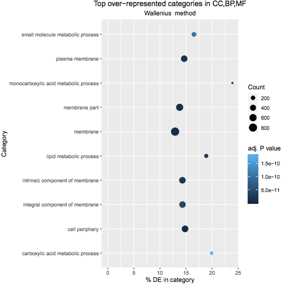Figure 35: Luminal pregnant vs lactating top 10 GO terms
The Fu paper also used goseq and found enrichment for cell contractility genes in the basal cells and enrichment in the luminal cells for general metabolic processes, lipid biosynthesis and transport proteins, and .
question Questions
Take a look at the top 10 GO plots for the luminal and basal contrast. How do you think they compare to what the authors found?
solution Solution
The top 10 GO terms seem to describe similar processes to what the authors found.
Gene Set Enrichment Analysis with fgsea
Gene Set Enrichment Analysis (GSEA) (Subramanian et al., 2005) is a widely used method that determines whether a set of genes is enriched in a list of differentially expressed genes. Unlike the previous method with goseq, no threshold is applied for what is considered “differentially expressed”, all genes are used. If a gene set falls at either the top (over-expressed) or bottom (under-expressed) of the list it is said to be enriched. fgsea is a faster implementation of the GSEA method. fgsea requires a ranked list of genes and some gene sets to test.
The Molecular Signatures Database (MSigDB) contains curated collections of gene sets that are commonly used in a GSEA analysis. They can be downloaded from the Broad website. But these collections are only of human gene sets. If working with another species you would need to first map the genes to their human orthologues. However, MSigDB versions for mouse are provided by the Smyth lab here so we’ll use those. There are several MSigDB collections, we’ll use the Hallmark collection, which contains 50 gene sets. According to MSigDB, “each gene set in the hallmark collection consists of a “refined” gene set, derived from multiple “founder” sets, that conveys a specific biological state or process and displays coherent expression. The hallmarks effectively summarize most of the relevant information of the original founder sets and, by reducing both variation and redundancy, provide more refined and concise inputs for gene set enrichment analysis”.
There are several ways we could choose to rank our genes, we could rank by log-fold change (most upregulated to most downregulated) but that doesn’t take into account any error in the log fold change value. Another way is to use the “signed fold change” which is to rank by the sign of the fold change multiplied by the P value (as described here. We could also use the t statistic that’s output from limma, as that takes into account the log-fold change and it’s standard error, see here for more explanation on the t statistic. We’ll use the t statistic to rank here.
hands_on Hands-on: Perform gene set enrichment with fgsea
Import the mouse Hallmark collection of gene sets from http://bioinf.wehi.edu.au/software/MSigDB/mouse_H_v5p2.rdata using the Paste/Fetch upload box
Set the file Type to rdata
Rename file as mouse_hallmark_sets
Cut columns from a tabletool with
“Cut columns”: c1,c6 (the Entrez gene ids and t-statistic)
“Delimited by”: Tab
param-collection“From”: the DE tables output of limmatool
Sort data in ascending or descending ordertool with
param-collection“Sort Query”: the output of Cuttool
“Number of header lines”: 1
“Column selections”:
“on column”: Column: 2
“in”: Descending order
“Flavor”: Fast numeric sort (-n)
fgseatool with
param-collection“Ranked Genes”: the output of Sorttool
“File has header?”: Yes
param-file“Gene Sets”: mouse_hallmark_sets
“Minimum Size of Gene Set”: 15
“Output plots”: Yes
fgsea outputs a table of results containing a list of pathways with P values and enrichment scores. It can also output a summary table plot of the top pathways like the one shown below for the basallpregnant-basallactate contrast.
Figure 36: fgsea Summary table
An enrichment plot of the each of the top pathways can also be produced, one is shown below. The barcode pattern shows where the genes in the set are found in the list of ranked genes. Most of the bars to the left indicate enrichment of the set at the top of the ranked list of genes (upregulated) and most bars towards the right indicate enrichment at the bottom of the list (downregulated). The enrichment score reflects the degree to which the genes are enriched at the top or bottom of the list.
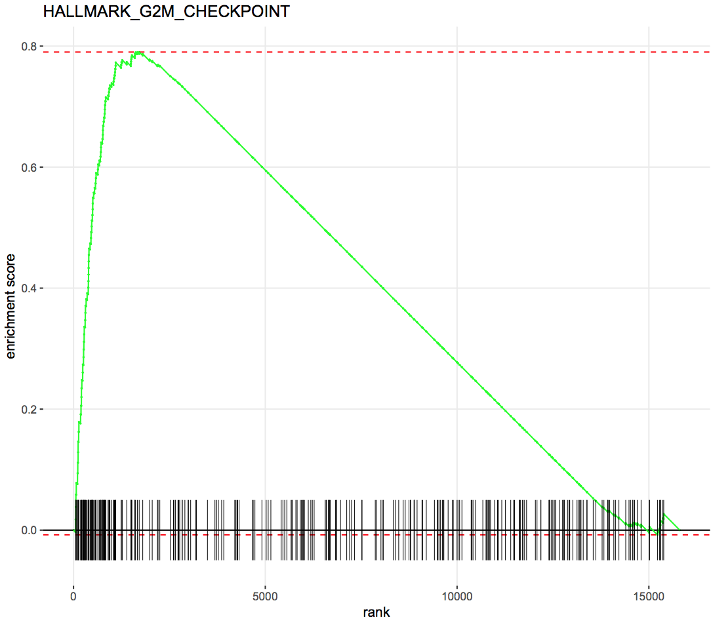Figure 37: fgsea Enrichment plot
Ensemble gene set enrichment analyses with EGSEA
The ensemble of genes set enrichment analyses (EGSEA) (Alhamdoosh et al, 2017) is a method developed for RNA-sequencing data that combines results from multiple algorithms and calculates collective gene set scores, to try to improve the biological relevance of the highest ranked gene sets. EGSEA has built-in gene sets from MSigDB and KEGG for human and mouse. We’ll show here how it can be used with the MSigDB Hallmark collection and KEGG pathways. For input we need a count matrix and EGSEA will perform a limma-voom analysis before gene set testing. We can use the filtered counts output from limma, where the low count genes have been filtered out, we just need to remove the gene symbol and description columns. We also need a symbols mapping file containing just the Entrez ids and symbols, which we can generate from the filtered counts file. The third input we need is a factors information file, containing what groups the samples belong to, we can use the one we used with limma.
hands_on Hands-on: Perform ensemble gene set testing with EGSEA
“MSigDB Gene Set Collections”: H: hallmark gene sets
“KEGG Pathways”: Metabolism and Signalling
“I certify that I am not using this tool for commercial purposes”: Yes
This generates a report like below.
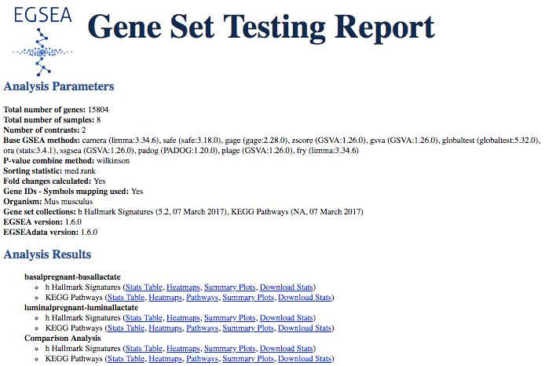Figure 38: EGSEA report
In addition to a table of results, plots are generated like the heatmaps of the top ranked pathways, shown below. Note that we see some similar pathways in the results here as with the fgsea analysis.
Figure 39: EGSEA heatmaps
KEGG pathway diagrams are generated if KEGG pathways are selected, as shown below. These show the expression values of the genes, genes upregulated in the contrast are shown in red, downregulated in blue.
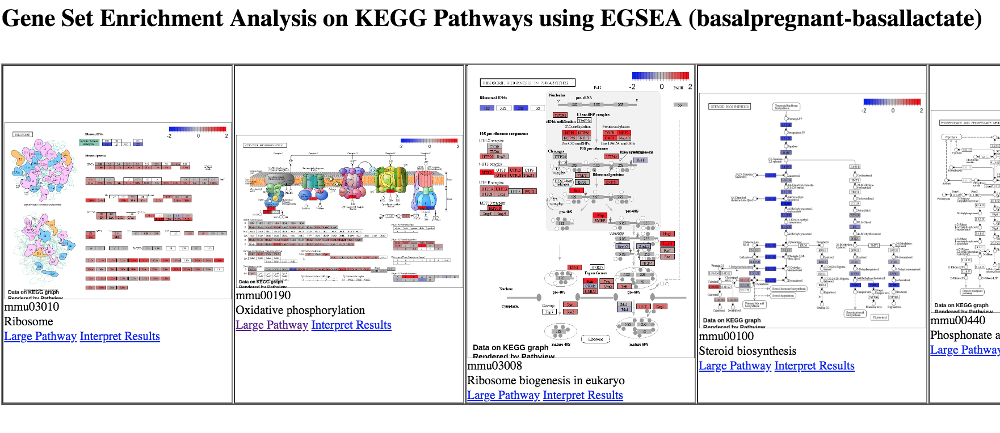Figure 40: EGSEA KEGG pathways
Conclusion
In this tutorial we have seen how counts files can be converted into differentially expressed genes with limma-voom, and some pathway analysis methods that can be applied. This follows on from the accompanying tutorial, RNA-seq reads to counts, that showed how to generate counts from the raw reads (FASTQ) for this dataset. In this part we have learnt ways to visualise the count data and QC checks that can be performed to help assess the quality and results. We have also reproduced results similar to what the authors found in the original paper with this dataset. For further reading on analysis of RNA-seq count data and the methods used here, see the articles; RNA-seq analysis is easy as 1-2-3 with limma, Glimma and edgeR (Law et al. 2016) and From reads to genes to pathways: differential expression analysis of RNA-Seq experiments using Rsubread and the edgeR quasi-likelihood pipeline (Chen, Lun, Smyth 2016).
keypoints Key points
The limma-voom tool can be used to perform differential expression and output useful plots
Multiple comparisons can be input and compared
Results can be interactively explored with limma-voom via Glimma
Multiple methods can be used to identify differentially expressed pathways
Useful literature
Further information, including links to documentation and original publications, regarding the tools, analysis techniques and the interpretation of results described in this tutorial can be found here.
congratulations Congratulations on successfully completing this tutorial!
feedback Give us even more feedback on this content!
To give us more detailed feedback about these materials, please take a moment to fill in the extended Feedback Form.

")
")

")

")